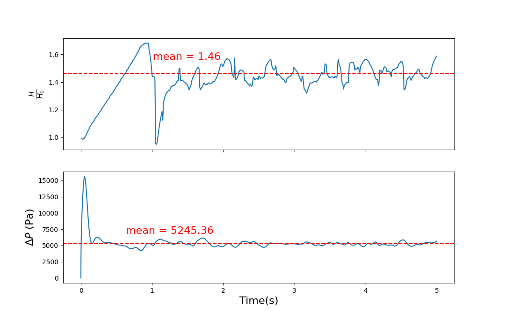

Description:Transient turbulent Euler-Euler simulation of a fluidized bed
Reference Paper: Experimental and computational study of gas-solid fluidized bed hydrodynamics
Model
The model consists of a rectangular domain of width 0.28m, height 1m and depth 0.025m.
The initial solids height was 0.4m with an initial solid fraction ($\alpha_s$) of 0.6 with maximum solid fraction of 0.63.
Meshing
Meshing was done using blockMesh.
The resulting mesh had 498443 points and 448000 hexahedral cells.
Physics
The model was simulated using the 2-phase Euler-Euler model which assumes continuum mechanics for both fluid (in this case gas) and solid phases.
The conservation equations (mass and momentum) for both the phases and are given below.
Mass conservation equations
$$\frac{\partial}{\partial t} \cdot (\alpha_g\cdot\rho_g) + \nabla\cdot(\alpha_g\cdot\rho_g\overrightarrow v_g) = 0$$ $$\frac{\partial}{\partial t} \cdot (\alpha_s\cdot\rho_s) + \nabla\cdot(\alpha_s\cdot\rho_s\overrightarrow v_s) = 0$$Momentum conservation equations
Energy conservation
RAS models were used for computing the turbulence in both the phases.
$k-\epsilon$ model was used for closure of turbulence stress in the gas phase
For the solid phase, Kinetic theory of dense/granular flows (KTGF) was used to close the momentum equations.
The table below gives information about the models used for closure of the equations
| Closure | Model |
|---|---|
| Momentum drag exchange ($K_{gs}$) | GidaspowErgunWenYu |
| Heat transfer | RanzMarshall |
| Granular viscosity | Gidaspow |
| Granular conductivity | Gidaspow |
| Granular pressure | Lun |
| Frictional Stress | JohnsonJacksonSchaeffer |
| Radial model | SinclairJackson |
Simulation
The case was simulated using the multiphaseEuler solver in OpenFOAM.
Some important parameters with their values are given in the table below
| Parameter | Value | Comment |
|---|---|---|
| Particle density, $\rho_s$ | 2500 $kg/m^3$ | Glass beads |
| Gas density, $\rho_g$ | 1.225 $kg/m^3$ | Air |
| Mean particle diameter, $d_s$ | 275 $\mu m$ | Uniform distribution |
| Restitution coefficient, $e_{ss}$ | 0.95 | Range in literature 0.9-0.99 |
| Specularity coefficient, $e_{sp}$ | 0.2 | For wall condition of particles |
| Initial solids packing, $\epsilon_{s0}$ | 0.6 | fixed value |
| Max solids packing, $\epsilon_{s,max}$ | 0.63 | fixed value |
| Superficial gas velocity, U | 0.38 m/s | ~0.5 - ~6 $U_{mf}$ |
Boundary Conditions
| Parameter | Internal Field | Inlet | Outlet | Walls |
|---|---|---|---|---|
| U.particles | uniform (0 0 0) | interstitialInletVelocity uniform (0 0.38 0); alpha.air | pressureInletOutletVelocity; phi.air | noSlip |
| U.air | uniform (0 0 0) | fixedValue uniform (0 0 0) | fixedValue uniform (0 0 0) | JohnsonJacksonParticleSlip |
| Pressure (p_rgh) | uniform 1e5 | fixedFluxPressure value = 1e5 | prghPressure; value = 1e5 | fixedFluxPressure; value = 1e5 |
| alpha.air | set using setFields | zeroGradient | zeroGradient | zeroGradient |
| alpha.particles | set using setFields | zeroGradient | zeroGradient | zeroGradient |
| Theta.particles | uniform 0 | fixedValue; value = 1e-4 | zeroGradient | JohnsonJacksonParticleTheta |
| k.air | uniform 1 | fixedValue; value = 1 | inletOutlet | kqRWallFunction |
| epsilon.air | uniform 10 | fixedValue; value = 10 | inletOutlet | epsilonWallFunction |
The transient simulation was run for 5s with an adaptive $\Delta T$ of 0.0001 using the PIMPLE (PISO/SIMPLE) algorithm.
The PISO algorithm with 3 Non-orthogonal correctors and 2 correctors was used along with drag correction.
Validation
Results were validated against the aforementioned reference paper.
The important parameters for validation were - the expansion ration $\frac{H}{H_0}$ & pressure drop $\Delta p$.
Since the system exhibited oscillatory behaviour after about 2s, time-range of 3 - 5s was taken for computing the mean values
The mean expansion ration and pressure drop were calculated for the above time range and these values are given in the table below along with the reference values.
| Parameter | Simulation | Reference |
|---|---|---|
| $\frac{H}{H_0}$ | 1.46 | 1.49 |
| $\Delta p$ (Pa) | 5245 | 5428 |
From the above table, it can be inferred that the simulation is successfully validated and the fluidization can be successfully observed.
Back to Database